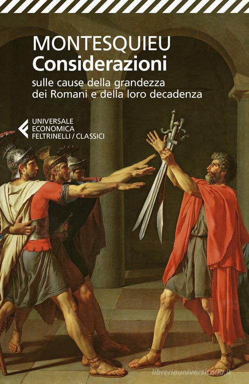
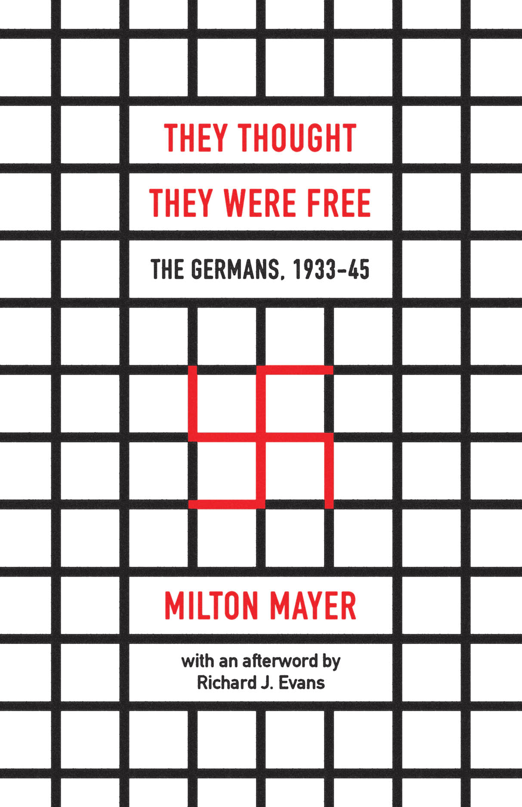
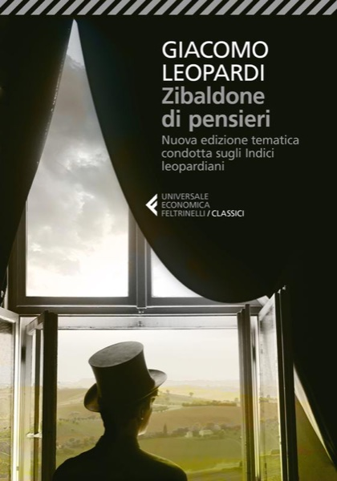
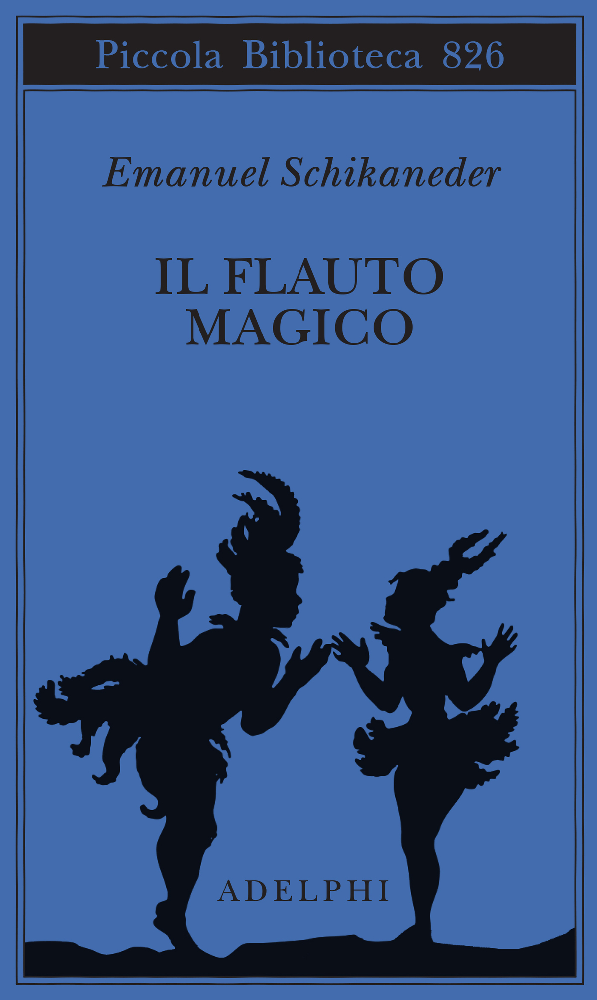
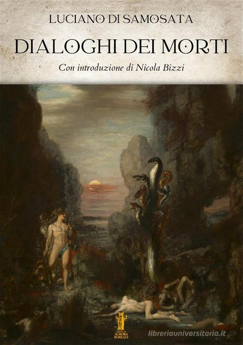
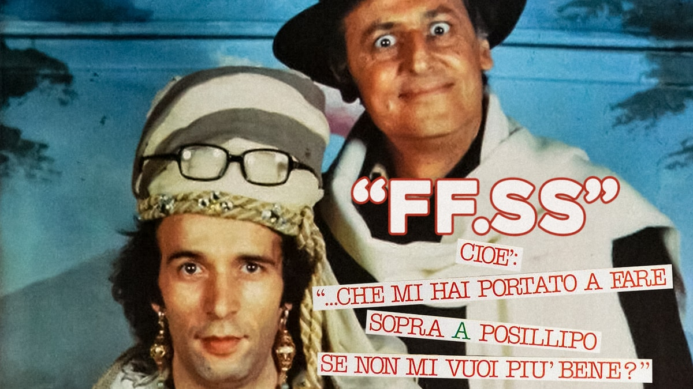

55:47 · 16 OPERE
Pasolini ed il fascismo degli antifascisti.
Il filo del discorso
Che cosa resta dell’antifascismo quando il bersaglio è soltanto un costume del passato e sfuggono le forme del potere presenti nella vita ordinaria? Dr Divago affronta la domanda attraverso Il fascismo degli antifascisti, una breve selezione di interventi di Pier Paolo Pasolini. La lettura privilegia la forza del poeta nell’osservare la trasformazione degli esseri umani: i consumi, la lingua, le aspirazioni e la perdita delle differenze sociali e culturali. Prima di entrare nei brani, il relatore contesta la ricezione editoriale dello scrittore e la prefazione di Tullio De Mauro a una diversa raccolta, Interviste corsare. Il dissenso viene presentato come suo giudizio sulla mediazione culturale. Il primo nucleo riguarda il confronto pasoliniano fra fascismo storico e società dei consumi. Nel ragionamento letto, l’uniforme non era riuscita a cancellare del tutto il mondo contadino, mentre la nuova omologazione modifica desideri e comportamenti dall’interno. Dr Divago collega questa diagnosi a Meerloo, Marcuse e Mansilla. Il discorso si sposta poi sulla pretesa di racchiudere la realtà in una sola interpretazione: il conformismo impedirebbe non soltanto il dissenso pubblico, ma anche il riconoscimento di una propria coscienza e individualità. Il primato del singolo sul collettivo è la risposta filosofica proposta dal relatore. Una seconda lettura riguarda la cultura di una nazione e il potere che Pasolini descrive come sempre meno riconducibile ai tradizionali centri italiani. La forza di queste pagine viene cercata nella loro capacità di nominare un cambiamento ancora difficile da rappresentare. Dr Divago le applica al periodo pandemico, alle restrizioni e alla vaccinazione. Questa estensione appartiene alla sua interpretazione contemporanea: Pasolini non poteva pronunciarsi su eventi avvenuti dopo il 2020, e la somiglianza retorica non costituisce una valutazione clinica o una dimostrazione di identità fra sistemi politici diversi. Il tema dell’identità diventa concreto attraverso il gusto. Preferire un colore perché coincide con quello proposto dalla moda, oppure discutere il Flauto magico spiegandone musica e significati, sono per Dr Divago due modi diversi di rapportarsi alla cultura. Il primo rischia di scambiare la scelta fra merci per individualità; il secondo apre una conversazione capace di aggiungere qualcosa alla conoscenza comune. Alla medesima domanda si collegano una lettera del relatore agli editori, la critica del successo e il richiamo alla satira di Luciano e Arbore. L’ultima parte legge il racconto pasoliniano di una intervista: la conversazione inizialmente fiduciosa con una giornalista diventa, nell’articolo pubblicato, una maschera fatta di luoghi comuni. Dal particolare emerge il problema morale della complicità con una normalità seducente. Il confronto fra madre e figlio fascista è una provocazione interna a questo ragionamento, non una assoluzione del fascismo storico. Il contributo si chiude sulla difficoltà di riconoscere l’autoritarismo quando assume i modi rispettabili del proprio ambiente. Le generalizzazioni sui giornalisti, gli attacchi personali e le analogie sanitarie rimangono attribuiti al relatore; date, opere e limiti dei riscontri sono precisati nelle note.
I libri nel discorso
Il fascismo degli antifascisti
Copertina: Garzanti, I piccoli grandi libri, 2018, ISBN 9788811603696. Il catalogo editoriale conta 96 pagine; il record bibliotecario ne descrive 94. Fotografia della copertina verde scura con fascia centrale beige. La specifica tiratura del video non è accertata.
Immagine autentica dell’opera, controllata visivamente; l’edizione di riferimento non è attribuita al filmato.
Il fascismo degli antifascisti, Garzanti, titolo e autore espliciti; lettura di più brani della selezione.
Passaggio 2:59 ↗ · Fonti e libro ↗
Scritti corsari
Copertina: Garzanti, Elefanti bestseller, 19ª edizione, 15 gennaio 2015, 272 pagine, prefazione di Alfonso Berardinelli, ISBN 9788811688372. Copertina bianca con ritratto seppia di Pasolini. Raccolta pubblicata originariamente nel 1975; l’immagine non è della prima edizione.
Immagine autentica dell’opera, controllata visivamente; l’edizione di riferimento non è attribuita al filmato.
Scritti corsari è nominato e distinto dalle Interviste corsare; torna come raccolta più ampia a 514 secondi.
Passaggio 2:15 ↗ · Fonti e libro ↗
La ballata delle madri
Copertina della raccolta: Garzanti · 2001
La ballata delle madri è contenuta in Poesia in forma di rosa. L’immagine mostra la raccolta Garzanti del 2001, con prefazione di Edoardo Esposito, non un volume autonomo della poesia né l’edizione del video.
La poesia sulle madri e il suo incipit sono riconoscibili; viene richiamata senza lettura integrale.
Passaggio 8:18 ↗ · Fonti e libro ↗
Ritorno al futuro (Back to the Future)
Fotografia promozionale di Ritorno al futuro: Fotografia promozionale del film del 1985, archivio del produttore Amblin.
Fotografia promozionale ufficiale, non locandina né copertina editoriale; la provenienza è il sito del produttore Amblin.
Ritorno al futuro e la scena del dialogo fra il ragazzo e Doc sul presidente Reagan sono espliciti.
Passaggio 12:24 ↗ · Fonti e libro ↗
The Rape of the Mind
Copertina: World Publishing Company · 1956 · testo inglese
Fotografia della copertina dell’edizione originale del 1956, fornita dal catalogo OpenLibrary. I segni d’usura appartengono all’esemplare fotografato. Edizione del video non accertata.
Meerloo, titolo inglese The Rape of the Mind e traduzione orale sono espliciti.
Passaggio 14:44 ↗ · Fonti e libro ↗
Faschismus und eindimensionale Gesellschaft
Fotografia dell’edizione Luchterhand 1971: Neuwied / Berlin, Hermann Luchterhand, 1971, Sammlung Luchterhand 18, 238 pagine. Titolo italiano descrittivo: Fascismo e società unidimensionale; non è attestata qui una edizione italiana.
Fotografia autentica di un esemplare della Librairie du Bassin: copertina beige, autore, titolo tedesco e marchio Sammlung Luchterhand leggibili. L’immagine dell’esemplare mostra segni d’uso e il timbro di un precedente possessore. Non è una copertina ridisegnata, né una immagine dell’opera di Marcuse. Numero di inventario commerciale distinto da un ISBN.
Mansilla e il titolo sulla società a una dimensione sono espliciti, distinti dal libro di Marcuse.
Passaggio 18:31 ↗ · Fonti e libro ↗
L’uomo a una dimensione
Copertina: Einaudi, Piccola Biblioteca Einaudi, 1999
Copertina di un’edizione bibliografica dell’opera, con introduzione di Luciano Gallino. La citazione nel video resta probabile; questa edizione non vi è confermata.
Marcuse e L’uomo a una dimensione sono nominati nel confronto con Mansilla.
Passaggio 18:42 ↗ · Fonti e libro ↗
Il marchese del Grillo
Confezione DVD · edizione restaurata: Immagine della confezione DVD restaurata CG Entertainment, catalogata nel 2025, EAN 8033109395410. Film originale del 1981. Confezione rossa con Alberto Sordi; fotografia quadrata con margini bianchi, non copertina di un libro.
Fotografia della confezione DVD autentica. Il codice è un EAN commerciale audiovisivo, non un ISBN; il video cita il film, non questa edizione home video.
Il marchese del Grillo e la battuta sul privilegio del protagonista sono espliciti.
Passaggio 20:33 ↗ · Fonti e libro ↗
Considerazioni sulle cause della grandezza dei Romani e della loro decadenza
Copertina: Feltrinelli, Universale Economica I Classici, 2021, 384 pagine, traduzione di Domenico Felice, ISBN 9788807904059. Comprende anche il Dialogo tra Silla ed Eucrate. Copertina con Il giuramento degli Orazi, non frontespizio della prima edizione del 1734.
Immagine autentica dell’opera, controllata visivamente; l’edizione di riferimento non è attribuita al filmato.
Montesquieu e lo scritto sulla decadenza di Roma sono espliciti; il passo sulle divisioni e la libertà corrisponde al capitolo IX.
Passaggio 21:05 ↗ · Fonti e libro ↗
They Thought They Were Free: The Germans, 1933–45
Copertina: Copertina della edizione inglese ampliata University of Chicago Press 2017, con postfazione di Richard J. Evans, ISBN 9780226525839. Il catalogo corrente indica 384 pagine, mentre una pagina di estratto ne indica 368; la differenza non identifica la precisa tiratura del filmato. Prima pubblicazione 1955. La traduzione orale del titolo non dimostra una edizione italiana specifica.
Titolo e autore leggibili sulla copertina originale del sito editoriale; Evans è autore della postfazione, non coautore della inchiesta 1955.
Milton Mayer e la traduzione orale del titolo Pensavano di essere liberi sono espliciti.
Passaggio 24:40 ↗ · Fonti e libro ↗
Genesi
Identificazione probabile
Copertina: Einaudi, I libri della Bibbia / Einaudi Tascabili, 2000; introduzione di Steven Rose
Copertina dell’edizione autonoma Genesi, nella serie I libri della Bibbia, con introduzione di Steven Rose. Edizione scelta come riferimento iconografico; nessuna edizione è confermata nel video.
Adamo, Eva e il serpente nel paradiso terrestre: collegamento al racconto di Genesi, titolo del libro non pronunciato.
Passaggio 26:09 ↗ · Fonti e libro ↗
Zibaldone di pensieri
Copertina: Feltrinelli · Universale Economica, I classici
Lo Zibaldone è un esempio esplicito nella polemica sulla conoscenza culturale; non è oggetto di recensione.
Passaggio 29:57 ↗ · Fonti e libro ↗
Il flauto magico (Die Zauberflöte, K 620)
Copertina del libretto · Adelphi 2025: Copertina del libretto: Emanuel Schikaneder, Adelphi, Piccola Biblioteca 826, 2025, 274 pagine, ISBN 9788845940613; testo originale a fronte, traduzione di Gian Piero Bona, prefazione di Pietro Citati, saggio di Jurgis Baltrušaitis. È una edizione di riferimento successiva al contesto del video, non un’esecuzione musicale.
Copertina autentica del libretto di Schikaneder: il riferimento nel video riguarda l’opera di Mozart. La pubblicazione del 2025 non viene attribuita al relatore né presentata come partitura.
Il flauto magico e Mozart sono nominati come esempio di gusto musicale capace di motivare le proprie ragioni.
Passaggio 42:35 ↗ · Fonti e libro ↗Gutsy (serie documentaria)
Identificazione probabile
Fotografia promozionale di Gutsy, Apple TV Press (2022): Fotografia promozionale ufficiale della serie documentaria Gutsy (2022), pubblicata da Apple TV Press nel comunicato del 14 luglio 2022; Chelsea e Hillary Clinton secondo la didascalia della fonte. Non copertina del libro The Book of Gutsy Women né immagine di un episodio determinato.
L’immagine è legata dalla didascalia ufficiale alla serie. Le identità sono documentate dalla fonte e non dedotte dai volti; la data è quella del comunicato, non una data di scatto accertata. Nessuna visione della serie o collazione con fotogrammi del seminario dichiarata.
Nel passaggio: 01 s: documentario annunciato per gli Stati Uniti, Clinton e conversazioni con attrici e Kardashians. Hillary Clinton è nominata esplicitamente anche a 2764,37 s. Titolo Gutsy e Chelsea non pronunciati. L’annuncio Apple riscontra la specifica serie e la partecipazione di Kim Kardashian, mantenendo l’identificazione probabile.
Passaggio 44:43 ↗ · Fonti e libro ↗
Dialoghi dei morti
Copertina: Aurora Boreale · 2024 · introduzione di Nicola Bizzi
Immagine autentica dell’opera, controllata visivamente; l’edizione di riferimento non è attribuita al filmato.
Luciano di Samosata e i Dialoghi dei morti sono espliciti nel confronto con la celebrità moderna.
Passaggio 45:48 ↗ · Fonti e libro ↗
FF.SS. – Cioè: …che mi hai portato a fare sopra a Posillipo se non mi vuoi più bene?
Grafica di presentazione del film · RaiPlay: Film italiano del 1983, regia di Renzo Arbore. Grafica di presentazione autentica RaiPlay con titolo e personaggi; non una copertina di libro e non Il pap’occhio, diverso film dello stesso regista.
Immagine intera della scheda Rai, con il titolo riconoscibile. Il riferimento alla battuta resta da collazionare sul film; non si presenta la grafica come il fotogramma della scena citata.
Arbore, FF.SS. e la chance nel mondo dello spettacolo sono espliciti.
Passaggio 46:36 ↗ · Fonti e libro ↗